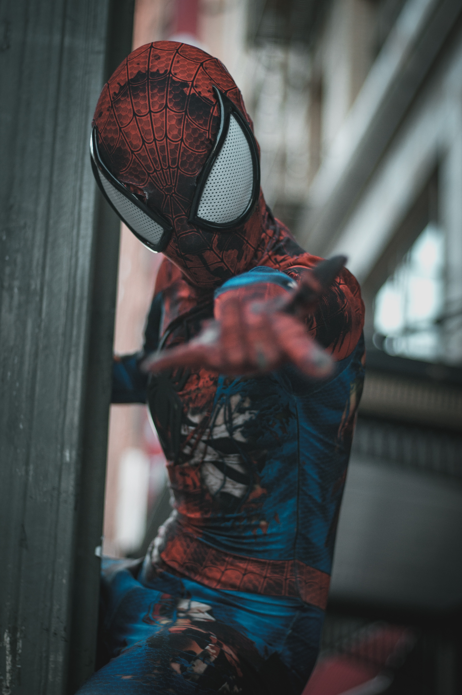

Spider-Man is a superhero appearing in American comic books published by Marvel Comics. Created by writer-editor Stan Lee and artist Steve Ditko, he first appeared in the anthology comic book Amazing Fantasy #15 (August 1962) in the Silver Age of Comic Books. He has since been featured in films, television shows, novels, video games, and plays. Spider-Man is the alias of Peter Parker, an orphan raised by his Aunt May and Uncle Ben in New York City after his parents Richard and Mary Parker died in a plane crash. Lee and Ditko had the character deal with the struggles of adolescence and financial issues and gave him many supporting characters, such as Flash Thompson, J. Jonah Jameson, and Harry Osborn; romantic interests Gwen Stacy, Mary Jane Watson, and the Black Cat; and foes such as Doctor Octopus, the Green Goblin, and Venom. In his origin story, Spider-Man gets superhuman spider-powers and abilities from a bite from a radioactive spider; these include clinging to surfaces and ceilings, superhuman strength, speed, and agility, and detecting danger with his precognition ability called "spider-sense." He also builds wrist-mounted "web-shooter" devices that shoot artificial spider-webs of his own design that were meant to be used for fighting his enemies and web-swinging across the city. After his personal tragedy of his late Uncle Ben, Peter began using his spider-powers to fight against crime as Spider-Man. When Spider-Man first appeared in the early 1960s, teenagers in superhero comic books were usually relegated to the role of sidekick to the protagonist. The Spider-Man series broke ground by featuring Peter Parker, a high school student from Queens, New York, as Spider-Man's secret identity, whose "self-obsessions with rejection, inadequacy, and loneliness" were issues to which young readers could relate.[8] While Spider-Man had all the makings of a sidekick, unlike previous teen heroes such as Bucky and Robin, Spider-Man had no superhero mentor like Captain America and Batman; he thus had to learn for himself that "with great power comes great responsibility" — a line included in a text box in the final panel of the first Spider-Man story but later retroactively attributed to his guardian, his late Uncle Ben Parker. Marvel has featured Spider-Man in several comic book series, the first and longest-lasting of which is The Amazing Spider-Man. Over the years, the Peter Parker character developed from a shy, nerdy New York City high school student to a troubled but outgoing college student, to a married high school teacher to, in the late 2000s, a single freelance photographer. In the 2000s, he joins the Avengers. Doctor Octopus also took on the identity for a story arc spanning 2012–2014, following a body swap plot in which Peter appears to die.[9] Marvel has also published books featuring alternate versions of Spider-Man, including Spider-Man 2099, which features the adventures of Miguel O'Hara, the Spider-Man of the future; Ultimate Spider-Man, which features the adventures of a teenaged Peter Parker in an alternate universe; and Ultimate Comics: Spider-Man, which depicts the teenager Miles Morales, who takes up the mantle of Spider-Man after Ultimate Peter Parker's supposed death. Miles later became a popular superhero in his own right and was brought into the mainstream continuity, where he sometimes works alongside Peter.
